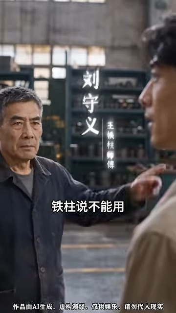
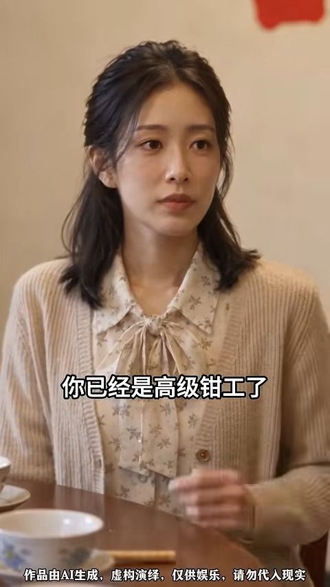
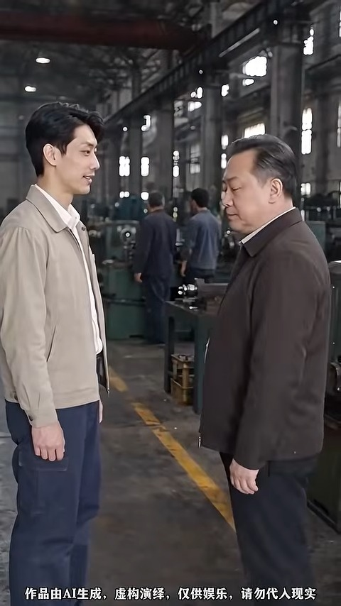

작품
기준작과 상영관
기준작 《一双手闯出一片天》을 장면 단위로 들여다봅니다.
《一双手闯出一片天》 2분 안에 갈등을 압축하다
교수님 피드백대로 작품 하나를 기준점으로 고정했습니다. 다른 작품과 자료는 모두 이 작품을 설명하거나 비교하는 데 씁니다.
끊어지기 직전의 와이어, 이름 자막 한 줄로 끝나는 인물 소개, 화면 하단의 ‘作品由AI生成’출처: 红果短剧 / 一双手闯出一片天
영상: YouTube 합본, KK爱看
一双手闯出一片天
우리말 풀이: 두 손으로 일군 세상
- 红果短剧
- AI 실사풍
- 126화
- 逆袭
- 都市
- 剧情
- 重生
하이청 제1기계공장의 고급 선반공 왕톄주는 남을 챙기느라 기회를 번번이 양보합니다. 죽음 뒤 15년 전으로 돌아간 그는 더는 기다리지 않고, 허름한 수리점에서 창업합니다.
일주일 사이의 지표 변화, 11월 2일에서 9일로
작품 정보 더 보기
- AI 표기. 모든 화면 하단에 “作品由AI生成，虚构演绎，仅供娱乐，请勿代入现实”이 고정돼 있습니다. AI 생성, 허구, 오락용이라는 뜻입니다.
- 시대 배경. 진급 추천 명단, 고급 선반공 같은 국영 공장 체제가 나옵니다. 정확한 연도는 화면에 나오지 않습니다.
- 분량. 红果 공식 플레이어에서 1~5화 길이는 116, 86, 114, 61, 58초, 평균 약 87초입니다. YouTube 합본은 회차마다 앞뒤를 잘라 이어 붙여 길이 근거로 쓰지 않습니다.
2분 30초 안에 한 바퀴
갈등, 죽음, 회귀, 반격이 1화와 2화 앞부분에 모두 들어갑니다.
1화 장면 8컷: 억압에서 회귀, 반격까지
장면 시간은 YouTube 합본 기준이라 红果 플레이어보다 10~20초 이릅니다. 회귀 장면은 红果에서 1:49, YouTube에서 1:30입니다.
배신, 회귀, 기회를 되찾는 선택. ‘노동과 기술로 인정받고 싶은 욕망’을 짧은 서사에 응축합니다. 설명 없이 2분 안에 억압, 전환, 반격의 한 바퀴가 완결돼 짧은 시간에 정서적 보상 한 단위를 줍니다.
1화 초반 3분 장면 기록 전체 보기
4~6초 간격으로 직접 확인한 기록입니다. 시간은 YouTube 합본 기준입니다.
| 시간 | 장면과 자막 | 서사 기능 |
|---|---|---|
| 0:00 | 공장, 크레인에 매달린 감속기 | 배경 제시 |
| 0:08 | 마즈창 이름 자막, “일단 감속기부터 옮기고 교체하자” | 갈등 발생 |
| 0:16 | 스승 류서우이 “톄주가 쓸 수 없다고 했어” | 주인공의 전문성 |
| 0:20~0:24 | “작업 반 시간 늦어져도 안 죽어”, “사고 나면 내가 책임진다” | 갈등 심화 |
| 0:36~0:40 | 와이어가 끊어짐, “조심해!” | 사고 |
| 0:48~0:56 | 아내 쉬시우쥐안이 다리 다친 마즈창을 돌보고, 피 흘리는 톄주는 “시우쥐안”을 부름 | 주인공 억압 |
| 1:04~1:20 | “톄주는 가슴을 다쳤어”, “즈창은 다리잖아”, 마즈창을 먼저 차에 태움 | 억압 극대화 |
| 1:28~1:32 | 톄주의 죽음, “十五年前” 15년 전, 약혼 식사 자리 | 회귀 |
| 1:41~1:46 | 시우쥐안 “네 진급 추천 자리 말인데” | 전생의 양보 재현 |
| 2:01~2:40 | “어차피 고급 선반공이잖아”에 톄주 “지금 내게 가장 필요한 건 기회야”, “이제야 내 차례야” | 첫 반격 |
| 2:46 | “고작 조장 자리잖아” | 다음 갈등 예고 |
인물 관계도
억압의 가해자는 가장 가까운 사람, 아내와 친구입니다.

류서우이 刘守义스승“톄주가 쓸 수 없다고 했어.” 톄주의 판단을 전하지만 이 경고는 무시됩니다.

쉬시우쥐안 许秀娟아내, 회귀 뒤엔 약혼녀사고 때 남편보다 친구를 먼저 돌보고, 회귀 뒤 약혼 자리에서 진급 추천 자리를 양보하라고 합니다.
 왕톄주 王铁柱주인공, 고급 선반공
왕톄주 王铁柱주인공, 고급 선반공
양보만 하다 죽음 → 회귀 → 양보 거부와 파혼 선언 → 공장을 떠나 수리점 창업
 마즈창 马志强친구
마즈창 马志强친구
“일단 감속기부터 옮기자.” 경고가 무시된 채 작업이 이어지고 와이어가 끊어집니다. 사고 뒤 차에는 마즈창이 먼저 탑니다.
인물 사진은 YouTube 합본 화면, 출처 红果短剧 / 一双手闯出一片天. 관계 설명은 팀의 관찰 결과입니다.
공간의 변화: 공장에서 수리점으로


공장에서 수리점으로의 이동은 ‘남을 위해 양보하던 사람’이 ‘자기 기술로 서는 사람’으로 바뀌는 보상을 눈에 보이게 합니다.
시간대별 장면 더 보기
시간은 YouTube 합본 기준
전체 흐름
- 0~5분죽음과 회귀전생의 죽음, 회귀, 양보 거부
- 5~20분갈등의 반복마즈창, 아내와의 갈등이 공장과 가정에서
- 20분 무렵공장을 떠남조직에서 나와 홀로 선다
- 40분 이후기술로 인정받기수리점에서 부품 가공, 도면 검토
YouTube 합본 시간대별 표본 확인
이 작품만의 특징
“내가 기술이 좋으니까”, “자기가 만든 건 끝까지 봐야지” 같은 대사가 반복됩니다.
南方都市报가 인기 AI 만화극 100편에서 찾은 ‘절반 가까이가 가까운 사람에게 상처받으며 시작’과 같은 패턴입니다.
댓글에 “주인공이 다 용서한다”, “돈을 성실하게 번다”는 반응이 있습니다. 극단적 복수극과 다른 지점입니다.
직접 보기: 장면 클립
앞에서 본 장면을 영상으로 확인해 보세요. 작품을 고르면 해당 구간만 재생됩니다.